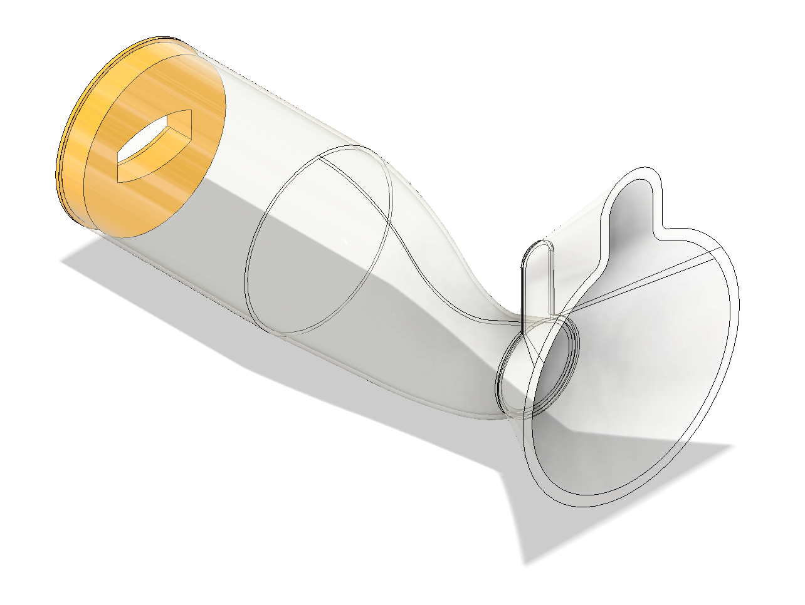

2024
CFD Redesign of Paediatric Inhaler Spacer
Group CFD study using ANSYS Fluent to evaluate and redesign a child inhaler spacer, focusing on particle delivery efficiency and flow behaviour into the throat.
Particulars

Placeholder image: replace with Fluent velocity or particle tracking contours.
Context & Challenge
Metered-dose inhalers are commonly prescribed for children with asthma, but a significant portion of medication can be lost to the mouth and throat. Spacer devices improve delivery efficiency, but their internal geometry strongly influences airflow patterns and particle trajectories. The challenge was to use CFD to assess existing performance and propose geometry changes that improve drug delivery to the lungs.
Objectives & KPIs
My Contribution
I designed and analysed the inclined outlet spacer, focusing on redirecting flow more smoothly toward the mouth to reduce particle deposition on spacer walls. I contributed to mesh strategy discussions, solver setup validation, and cross-comparison of all redesigns in the final presentation.
- Designed one full spacer geometry for CFD evaluation.
- Set up and ran Fluent simulations using consistent boundary conditions.
- Post-processed velocity fields and particle trajectories for comparison.
- Contributed to validation and limitations discussion.
CFD Setup
Geometry and mesh
A baseline spacer and four redesigned geometries were modelled. Mesh sizing was iterated to achieve a valid mesh with acceptable element count while avoiding skewed or failed cells. A standard growth rate was used to maintain mesh quality across curved surfaces.
Image to follow.
Solver and models
Simulations were run in ANSYS Fluent using a steady-state approach with a k–ε turbulence model. Gravity was enabled and hybrid initialisation was used to improve convergence stability.
Boundary conditions
Inlet flow conditions were set to represent typical paediatric inspiratory flow rates based on published respiratory data. Pressure outlet conditions were applied at the mouth exit, with no-slip walls modelled as smooth polycarbonate.
Particle modelling (DPM)
Drug particles were modelled using the Discrete Phase Model. Salbutamol density was defined explicitly, while remaining properties were approximated using air due to limited available data. Particle tracking allowed quantification of deposition versus successful delivery to the throat.
Image to follow.
Results & Comparison
All redesigned spacers altered internal flow structures compared to the baseline. Designs that reduced sharp directional changes and promoted smoother diffusion generally improved particle delivery efficiency. The inclined outlet design showed reduced wall deposition near the outlet and a more coherent jet into the mouth.
Image to follow.
Validation & Limitations
Results were compared qualitatively with literature studies on inhaler spacer performance. The steady-state assumption significantly reduced computational cost but limited realism compared to a transient breathing cycle. Simplified mouth geometry and approximate drug properties were also key limitations.
- Transient modelling would better capture inhalation dynamics.
- More anatomically accurate mouth geometry would improve realism.
- Measured salbutamol properties would refine particle tracking accuracy.
What This Demonstrated
- Ability to use CFD as a design comparison tool, not just visualisation.
- Understanding of mesh quality, solver choice, and modelling assumptions.
- Effective teamwork, with one validated redesign per team member.